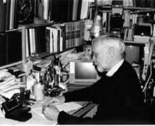

Please note: the AAS Obituaries are temporarily being hosted on this website while their full content is being ingested into the PubPub publishing platform newly adopted by the Bulletin of the American Astronomical Society. When the migration is complete, your existing links will take you to the final, migrated content. Contact peter.williams@aas.org with any questions.
Navigate:
| Back to index | Next: A. J. J. van Woerkom » |
A. G. Davis Philip (1929-2016)
A. G. Davis (“Dave”) Philip, investigator of photometric properties of globular clusters and other stars and prolific publisher of astronomical conference proceedings, died in Schenectady, New York, on 28 March 2016. Philip was born in New York City on 9 January 1929 to Van Ness and Lilian (Davis) Philip. He received his BS in physics in 1951 from Union College; MS in astronomy in 1959 from New Mexico State University (where he served in the U.S. army for two years); and his PhD in astronomy in 1964 from the Case Institute of Technology. His PhD thesis, published in the Astronomical Journal in 1965, was titled, “A Study of the Stellar Distribution at Galactic Latitude -30 Degrees.”
Philip held a wide variety of professional positions during his career: Instructor, Case Institute of Technology, 1962-1964; Assistant Professor of Astronomy, University New Mexico, 1964-1966; Assistant Professor of Astronomy, State University of New York-Albany, 1966-1967, and then Associate Professor, 1967-1976. From 1967 to 1981, he was an astronomer at Dudley Observatory, and was honored with the Frank L. Fullam Chair of Astronomy during his final year in residence. In 1976, he was appointed Research Professor of Astronomy at Union College, Schenectady, New York, a position he held until 2011. From 1982 until 1994, he was on the staff of the Van Vleck Observatory at Wesleyan University. At intervals, Philip was a visiting astronomer at Yale University; the Academy of Sciences and the Moletai Observatory, in Lithuania; Stellar Data Center, Strasbourg, France; Vatican Advanced Technology Telescope and Vatican Observatory, in Arizona and in Italy; and CASLEO Observatory, in Argentina. A colleague recalls his pride at being the first American astronomer to use the 6-meter reflector at the Special Astrophysical Observatory in Russia in 1980 (the largest telescope in the world at the time).
Philip's most cited publications include Astrophysical Parameters for Globular Clusters (co-editor, IAU Colloquium No. 68, 1981); “The Planetary Nebula Systems of the Magellanic Clouds” ( Publications of the Astronomical Society of the Pacific , 1978); “UBV Color-Magnitude Diagrams of Galactic Globular Clusters” (Dudley Observatory Report No. 11, 1976); “An Analysis of the Hauck-Mermillod Catalogue of Homogeneous Four-Color Data. II.” ( Astronomy and Astrophysics , Suppl. Ser., 1980); and The Nearby Stars and the Stellar Luminosity Function (co-editor, IAU Colloquium No. 76, 1983).
Rebecca Koopmann, Professor and Chair of the Department of Physics and Astronomy at Union College, studied with Philip early in her career: “Dave was my senior thesis adviser at Union, where I worked with him on investigating horizontal branch stars in globular clusters using color-magnitude diagrams. Dave started me on my career in observational astronomy, teaching me much about a systematic and organized approached to data analysis. He became a friend and was a mentor until his death. Dave tended to be quiet and reserved, but revealed his (often dry) sense of humor to those who knew him.”
In 1981, Philip founded the L. Davis Press; the first of its eventual 25 books detailed the proceedings of a meeting of the Astronomical Society of New York, held at Colgate University, on the subject of cosmic x-rays. He edited this and many of the subsequent volumes. With his brother K. W. Philip and others, he published a book on fractals titled “Midgets on the Spike” in 1991. From 1988-1991 he and his brother went across the U.S. and Canada on a lecture tour titled “An Introduction to the Mandelbrot Set.”
Philip was a founding member and Secretary and Treasurer of the New York Astronomical Corporation (NYAC), a professional society for New York state astronomers, from its founding in 1968 through to 2001. Rebecca Koopmann explains that the “NYAC hosts the annual Astronomical Society of New York (ASNY) meetings, provides travel and research awards to undergraduates and graduate students, and pursues its founding mission of obtaining a professional telescope for New York State. Students are encouraged to present at meetings. NYAC has established collaborations and friendships between many NY astronomers, and is especially valuable to new faculty as they move into the State. Dave's dedication over more than 30 years was essential to the organization's missions. In 2002, NYAC established the A. G. Davis Philip Travel Fund for undergraduate travel in honor of Dave's work for NYAC/ASNY.”
Philip was a member of many scientific societies, including the American Astronomical Society, where he administered and participated in the Harlow Shapley Visiting Lectureships program for ten years, and the International Astronomical Union, where he served as member, chairman, or secretary of a wide array of committees and commissions.
Philip was also an avid traveler and photographer, documenting his two round-the-world trips and fulfilling his long-held goal of setting foot on every continent with a 2008 visit to Antarctica. Starting as a young man, he conducted a generation-spanning photographic documentation project of the village of Tepotzlan, Mexico, culminating in a slide presentation to residents in the town square. Philip was predeceased by his parents and his brother, K. W. Philip. He is survived by his wife of 51 years, Kristina (Drobavicius); daughter, Elizabeth; grandsons, Ethan and Sullivan; brother, Peter Philip; nephews, William, Thomas, and Peter; and sister-in-law, Laima Drobavicius.
Contributions from Rebecca Koopmann and the family and colleagues of A. G. Davis Philip
Additional links:
BAAS Citation: BAAS, 2016, 48, 007